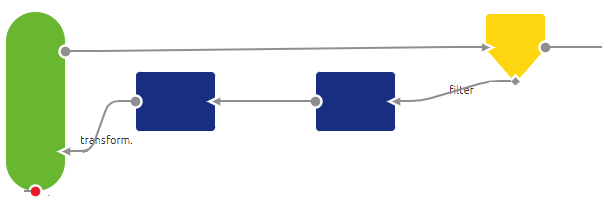
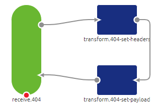

howto/hosting-rest-webservice
This document discusses how you can manually host a REST webservice outside the API management layer of eMagiz. The main idea of hosting a webservice, whether it be SOAP/XML or REST/JSON (or any other combination) is that the process you are supporting wants to be informed in real time or wants to execute actions in real time without any support from the integration. In other words you want the application to push the requests to eMagiz and from there to another application instead of having to pull the data out of an application. In this how to we will focus on the REST webservice and how you can host this in eMagiz through some simple steps. To summarize, hosting a REST webservice gives you:
- A way to listen for messages instead of actively needing to pull them.
- A way to receive messages via various HTTP methods (GET, PUT, POST, DELETE, etc.)
Best practices
- Don’t change your process when executing Capture and Design. Those steps don’t change if you want the output of what is being delivered on your REST endpoint transformed to a CDM and beyond
- Use naming conventions to make it clear to the calling party what the build up of the endpoint is, which methods are allowed and which contentTypes are allowed
- Keep the connectivity in the entry and the transformation in the onramp
- Use one HTTP Inbound Gateway per HTTP Method
How-to steps Hosting a REST webservice
Follow these steps carefully in order to acquire the desired result. If a step is unclear or you are not able to follow it, please contact your eMagiz partner manager.
- If the system for which you want to host the REST webservice is new start with step 2. If you already have a system Captured continue with step 6
- Navigate to Capture and add a system to the canvas
- Fill in the System name and information on the system
- Draw a line representing a message type from the system to eMagiz in the middle
- Fill in the relevant details based on system and message type specifics After this step you have successfully finished Capture (for hosting a REST webservice)
- Navigate to Design and double click on the system for which you want to host a REST webservice
- Select the option Combined entry connector
- Select Custom under Entry connector type
- If applicable, execute the same steps in Design as you normally. i.e create / change CDM, add system message, message mapping, update architecture, etc. After this step you have successfully finished Design (for hosting a REST webservice)
- Navigate to Create -> Add integrations
- Select the flow you have just registered via Capture and Design
- Press Save Selection
- Navigate back to Create. eMagiz will have added the flow including the all entry
- Open the all entry
- Add the support object called Jetty Server
- Open the support object after naming it
- Select a connector. When running in AWS or if you want to handle the authentication without a client certificate requirement the Select channel connector is the option of your choice. In most cases this is used
- Fill in the port
- Select for handler type the Servlet Context Handler. This way you can set up the endpoint through each HTTP inbound gateway that you need in the all entry
- Type in the context path. A option could be to go for /rest or /api or simply /. This will become part of the endpoint later on
- Select as Servlet the HTTP Inbound endpoint dispatcher. This does the following for you: A servlet that dispatches requests to HTTP inbound gateways and HTTP inbound channel adapters based on their request mapping settings. For more information see the help text provided with the component itself.
- Give the servlet a name so you can tell what the function is.
- Add a servlet mapping and fill in the required values. The servlet name needs to match the name you have just created in step 20. The path should be something that makes it clear to the caller what he is calling. A categorization could be done here (i.e /schades/* or /orders/* or /invoices/*)
- Press Save After this step you have successfully created the Jetty server that will host the collection of endpoints of your REST webservice
- Add a HTTP Inbound Gateway to the flow and create two channels to which it can connect
- Define the path that is specific for this endpoint (i.e /address or /invoicelines or v1/reports)
- Define the supported methods for this specific Gateway (i.e. GET, POST, DELETE)
- Define under the Advanced tab the Request payload type as java.lang.String for readability After this step you have successfully created an HTTP Inbound Gateway that listens to specific methods on a specific endpoint which you can test and works
- Apart from the mandatory options (defined in step 26 till 28) there are many optional options, such as defining params, which contentType(s) are consumed and produced. For more information on these please see the help text in the component itself
- You can verify if your endpoint works by deploying it on a local runtime and call the endpoint (via Postman) you have created in the previous steps. The structure is as follows: https://host:port/contextPath/servletPath/pathInfo?queryString
- If everything works correct (be aware, if you run it locally you need http in your endpoint) you should receive a 200 OK and a payload. Easiest way to test the validity of your setup is to create a POST call that gives back what you have posted.
After this step you have verified that the endpoint itself can be called. Next steps could be to add authentication or other checks in order to give back 401, 404, 403 etc.. Some of these are specified below, others can be configured in a similar fashion.
Giving back a 401 In case you secured the webservice with the help of an ApiKey you can validate whether what the client send to the webservice for authentication is indeed a correct ApiKey. This can be done via the following steps:
- Place a standard filter in your entry to validate if the ApiKey provided by the client is valid. This can be done via a SpEL expression comparable to the following (headers['Authorization'] == '${authentication.inbound.api-key}')
- In cases where the client is not authorized lead the message back to a standard header enricher. In this standard header enricher add a header called http_statusCode with a value 401
- Add a standard transformer to set a default message that can be given back to the client. An example would be '{ "errors": [{ "internalMessage": "Unauthorized" }]}'.

Giving back a 403 In case you have secured your REST webservice with the help of a client certificate and the client is unable to provide the correct certificate eMagiz will return a 403 by default. No other changes in the flow are needed
Giving back a 404 eMagiz will give back a 404 by default if the endpoint is not configured in one of the HTTP inbound channel adapters in your flow. You can override this functionality via the following steps.
- Add a separate HTTP inbound channel adapter that resolves to /* (this catches everything that cannot be resolved by any other HTTP inbound channel adapter)
- Set a standard header enricher and add a header called http_statusCode with a value 404
- Add a standard transformer to set a default message that can be given back to the client. An example would be '{ "errors": [{ "internalMessage": "Het aangeroepen endpoint is niet gevonden" }]}’.

Giving back a 500 eMagiz will give back a 500 by default if the flow results in an unresolvable error. To counteract this for most scenarios the error handling in eMagiz for synchronous flows has changed in such a way that the message or error will be given back to the client. To specify http code and body of the response you can follow these steps.
- Use the standard filter eMagiz gives you in a synchronous flow (with the SpEL expression headers['emagiz_error_isErrorMessage']!=true) and make sure that instead of throwing a default error the error channel leads to a standard header enricher
- Set a standard header enricher and add a header called http_statusCode with a value 500
- Add a standard transformer to set a default message that can be given back to the client. An example would be '{ "errors": [{ "internalMessage": "Een technische error heeft plaatsgevonden in de integratie" }]}’.